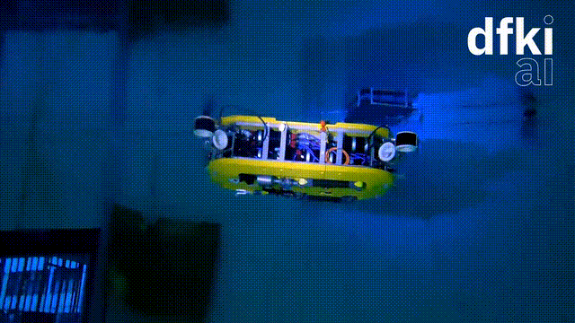
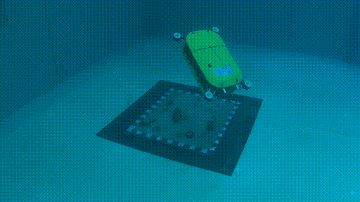
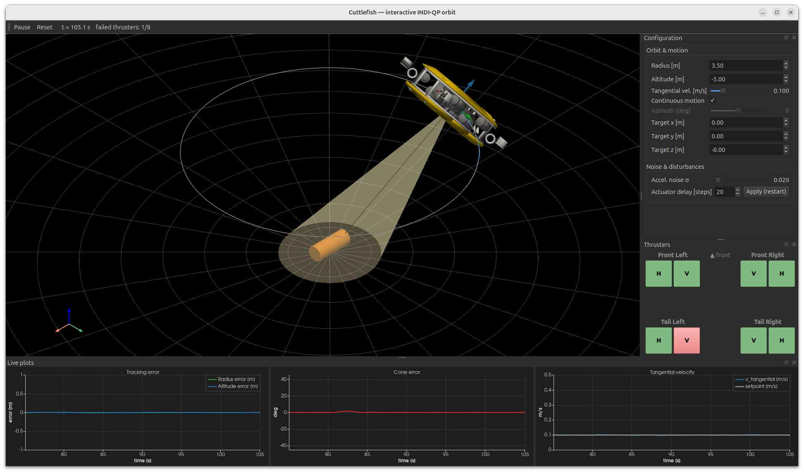
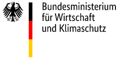
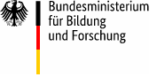
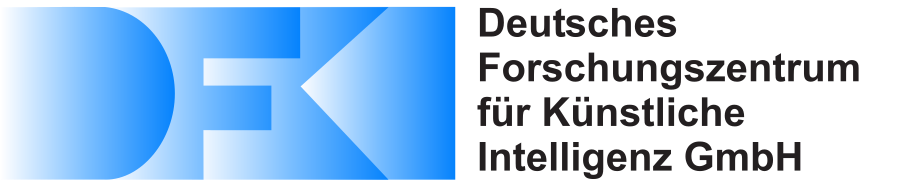

Sensor-based attitude control (INDI) and prioritized, fault-tolerant motion control (INDI-QP) for 6-DOF underwater vehicles.
German Research Center for Artificial Intelligence (DFKI GmbH), Robotics Innovation Center, Robert-Hooke-Straße 1, 28359 Bremen, Germany
Contact: tom.slawik@dfki.de
Model-based controllers for marine vehicles depend on an accurate dynamic model, which is hard to obtain because of strongly nonlinear hydrodynamic effects. Incremental Nonlinear Dynamic Inversion (INDI) trades model accuracy for sensor accuracy: it linearizes the system incrementally using acceleration and actuator feedback, significantly reducing the modeling effort.
This repository accompanies two papers that bring INDI to the 6-DOF dual-arm intervention AUV Cuttlefish. The first establishes INDI for hydrobatic attitude control; the second, INDI-QP, builds directly on it by adding a quadratic-program control allocation that prioritizes critical degrees of freedom, enabling passive fault-tolerant control under thruster failure.


Tom Slawik, Shubham Vyas, Leif Christensen, Frank Kirchner
2024 IEEE/RSJ International Conference on Intelligent Robots and Systems (IROS 2024), Abu Dhabi, UAE.
We present an attitude control scheme for an autonomous underwater vehicle (AUV) based on incremental nonlinear dynamic inversion (INDI). Conventional model-based controllers depend on an exact model of the controlled system, which is difficult to find, especially for marine vehicles subject to highly nonlinear hydrodynamic effects. INDI trades off model accuracy with sensor accuracy by incorporating acceleration feedback and actuator output feedback to linearize a nonlinear system incrementally. Existing research primarily focuses on INDI for unmanned aerial vehicles; there is barely any research on controlling marine vehicles using INDI. The control task is a 90-degree pitch-up maneuver, where the dual-arm intervention AUV Cuttlefish transitions from a horizontal traveling pose to a vertical intervention pose. We compare INDI to a classical model-based control scheme in the maritime test basin at DFKI RIC, Germany, and find that INDI keeps the AUV much more steady both in the transitioning phase and in the station-keeping phase.
Tom Vincent Slawik, Shubham Vyas, Bilal Wehbe, Leif Christensen, Frank Kirchner.
INDI-QP extends Incremental Nonlinear Dynamic Inversion (INDI) with a quadratic program to prioritize critical degrees of freedom during actuator failure. While the algorithm has gained significant attention within the aerial vehicle com- munity, it has not yet been studied for underwater systems. In this work, we adapt INDI-QP for the 6-DOF autonomous underwater vehicle Cuttlefish, which is equipped with eight thrusters and evaluate it on a 360 degrees inspection trajectory. To generate the inspection motion, a circular motion controller maintains a constant radius and attitude relative to a fixed object while keeping the line of sight aligned with the sensor axis. Our experiments show that, by prioritizing critical degrees of freedom, the proposed INDI-QP controller safely executes the inspection trajectory and maintains a significantly smaller line-of-sight off- axis error than a non-prioritized INDI baseline, even with fewer than six functional thrusters, at the cost of increased positional tracking error. Passive fault-tolerant control is enabled without thruster speed measurements by integrating a parallel thruster model into the control architecture.
When the vehicle becomes underactuated, the diagonal cost matrix
Wx establishes a task hierarchy: roll and pitch
(line-of-sight alignment) are weighted far above yaw and translation, so the rotation
about the sensor axis is sacrificed first. The convex QP is solved online with OSQP
subject to actuator-rate limits.
Both controllers are implemented in Python on top of Drake. Install Drake following the official instructions, then set up the Python environment:
sudo apt update && sudo apt install python3 python3-pip python3-venv
python -m venv venv
source venv/bin/activate
pip3 install -r requirements.txt# Pose controller (INDI vs. model-based NDI)
python3 examples/cuttlefish_pose_indi.py
python3 examples/cuttlefish_pose_ndi.py
# Velocity controller
python3 examples/cuttlefish_velocity_indi.py
python3 examples/cuttlefish_velocity_ndi.py
The easiest way to explore INDI-QP is the real-time desktop GUI (requires
PySide6, pyvista, pyvistaqt):
python3 start_interactive_sim.py
Click the thruster buttons (lower right) to fail or restore a thruster on the fly (green = enabled, red = failed). The configuration panel adjusts the orbit (radius, altitude, tangential velocity, target position) and accelerometer noise; the toolbar has Pause and Reset; and the live plots show the tracking, line-of-sight, and tangential-velocity errors.
# Orbit controller (INDI-QP vs. model-based)
python3 examples/cuttlefish_orbit_indi_qp.py
python3 examples/cuttlefish_orbit_ndi_qp.py
Each script has a parameter section for initial conditions, setpoints, controller
gains, filtering, and sensor noise. In the orbit scripts, set
thruster_configuration (entries 0–7) to 0 to disable a
thruster after t_fail and reproduce a failure scenario.
| Index | Thruster | Index | Thruster |
|---|---|---|---|
| 0 | Vertical front left | 4 | Horizontal front left |
| 1 | Vertical front right | 5 | Horizontal front right |
| 2 | Vertical tail right | 6 | Horizontal tail right |
| 3 | Vertical tail left | 7 | Horizontal tail left |
Motion models live in models/cuttlefish/
(cuttlefish_linear_model.yml, cuttlefish_quadratic_model.yml),
identified with linear and linear-quadratic drag models.
@inproceedings{SlawikIndi2024,
author = {Tom Slawik and Shubham Vyas and Leif Christensen and Frank Kirchner},
title = {Attitude Control of the Hydrobatic Intervention AUV Cuttlefish
using Incremental Nonlinear Dynamic Inversion},
booktitle = {2024 IEEE/RSJ International Conference on Intelligent Robots
and Systems (IROS 2024)},
year = {2024},
address = {Abu Dhabi, UAE}
}Publication details to be announced — citation will be added once the paper is published.
@unpublished{SlawikIndiQP,
author = {Tom Vincent Slawik and Shubham Vyas and Bilal Wehbe and
Leif Christensen and Frank Kirchner},
title = {Prioritized Motion Control Robust to Actuator Failure for
Hovering-Type AUVs using INDI-QP},
note = {Manuscript, publication details to follow},
year = {2025}
}Funded by the German Federal Ministry of Education and Research (grant no. 01IW22003) and the Federal Ministry of Economic Affairs and Climate Action (grant no. 03SX540D).


